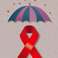
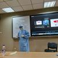
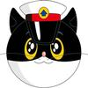

教育
法律
健康
职场
心理学
科技
情感
金融
母婴
更多
推荐答主

亲艾的小孩
2471 次咨询
5.0
￥45 咨询
1.市疾控中心HIV确证检验师，对HIV结果的判定临床经验丰富。
2.对高危行为和检验结果进行详细解读。
3.付费后快速响应。
4.咨询结束后如果此次问题没有解释清楚，可以私信。私信时请说明自己付过费。
Dr.Bian
2978 次咨询
5.0
￥58 咨询
性病艾滋病防治科科长，门诊主任，从业26年，擅长高危行为评估，恐艾心理咨询，艾滋病窗口期及检测，艾滋病暴露前暴露后预防，艾滋病治疗，梅毒，淋病，尖锐湿疣，生殖器疱疹，支原体衣原体感染等。

张煜医生
2624 次咨询
5.0
￥80 咨询
检验师王一壶
5044 次咨询
5.0
￥49 咨询
艾滋病确认实验室检验师，生物与医药硕士，从事艾滋病工作十余年，每天与艾滋病打交道。
风险评估、检测流程、检测单、试纸操作、阻断药、恐艾心理等等问题，都可以在我这里得到解答。
我将结合艾滋病理论知识和实际工作经验，提供专业、耐心、负责的咨询服务。
阿sir说法
3121 次咨询
5.0
￥48 咨询
专业背景：公安业务答主，从警十年，历经刑警、治安、派出所，熟知公安执法流程。
答疑范围：行政、刑事办案程序，专业指导：打架、嫖娼、网赌、冻卡等行政案件、行政处罚裁量标准、维权途径、开具无犯罪证明相关问题，招警政审，从法律和事实角度提出可行性建议。
林禾医生
12384 次咨询
5.0
￥49 咨询
临床医生，国家二级心理咨询师。
艾滋病综合防治工作领导小组成员。山东三甲医生。
从事HIV感染者外科疾病诊疗。
关于艾滋病，你在这里可以得到专业，中肯的回答。
近十年防艾脱恐经验助你科学脱恐。

黑猫律师
19812 次咨询
5.0
￥30 咨询
【专业背景】经济学学士、法律硕士、法律职业资格、律师。多年治安、刑事案件办理经验、两年金融机构内部反舞弊工作。
【咨询方向】解答经济犯罪及其他刑事、治安案件在受案、立案及侦查诉讼审判过程中的各种问题，并给出适当建议。
【特别注意】1.所有咨询已经不公开，无需担心隐私问题；2.注意提问条数和时间。
香草喵
8 次咨询
5.0
￥1 咨询
心理、情感方面的普通咨询～如果是有抑郁症等精神疾病的宝宝这里帮不了哦～请去医院治疗～
费曼的小茶馆
178 次咨询
5.0
￥60 咨询
80后体制内大叔，法律资格证持证人，擅长领域：考公、职场、婚姻、情感。
潘业
6180 次咨询
5.0
￥120 咨询
厦门大学附属第一医院感染科主任医师，我将给你艾滋病、狂犬病等传染病最新的信息和观点，尽量给你最专业的咨询和服务，减少你滥用药物、生物制品和反复强迫检测的可能。
实事求是
227 次咨询
5.0
￥500 咨询
学业和职业规划、职场晋升、情绪疏导、情感选择及资源整合。收费是为了筛选真实需求，严守秘密。
疾控中心艾防医生
1139 次咨询
5.0
￥80 咨询
上海市徐汇区疾控中心，主任医师，国家二级心理咨询师，擅长艾滋病咨询检测，高危行为风险评估，暴露前/后药物阻断，艾滋病恐惧症(恐艾症)，心理疏导，男男性行为，性服务小姐，吸毒者、青年学生、流动人口等干预、艾滋病患者管理，梅毒、尖锐湿疣、生殖器疱疹等性病、结核病、肝炎、狂犬病等急慢性传染病的综合防治。
袁大岛
39948 次咨询
4.9
￥3 咨询
情感分析，反焦虑解读，情绪陪伴，人生建议。
老派答主，尽我所能为您答疑解惑。
推送有延迟，感谢您耐心等待！
宏桑
14570 次咨询
5.0
￥89 咨询
知乎关注点赞量最高的情感答主，国家二级心理咨询师，擅长情感婚姻问题
实侃劳动
584 次咨询
5.0
￥31 咨询
【专业背景】擅长工伤、劳动争议处理。精通工伤各类法律问题及案主心理支持。更精通劳动争议的处理技巧与策略。
【提供服务】咨询、文书代写、全流程指导、个案跟进、个案倾听
法律贫道
4852 次咨询
4.9
￥25 咨询
咨询须知:
14年一线法律工作经验，公益法律咨询，私信可免费回答，付费是为了调节咨询数量。
业余时间回答，条数20条（最多只能20条），不够或者时间到了可以私信我，也会继续回复。
长时间未复说明在忙，请及时提醒或者向小管家要求退款。
咨询意见仅供参考。咨询不公开。
安sir说法
1903 次咨询
5.0
￥49 咨询
专注法律疑难问题研究及刑事犯罪、行政违法、民事纠纷法律实体及程序咨询，如不予立案的后续救济、治安调解、pc的处理、银行卡解冻等等。在依法维权、挽回损失、明晰责任、减轻处罚等方面依据多年实践经验，为提问者提供合理法律建议，不代表任何官方机构意见，仅供参考。
丁大龙律师
11991 次咨询
5.0
￥48 咨询
刑法学硕士，政协委员，擅长刑事辩护、交通事故、劳动争议等，欢迎咨询！
疾控刘医生
626 次咨询
4.9
￥68 咨询
疾控中心艾滋病科医生，副主任医师，国家二级心理咨询师，社会工作师。从事艾滋病性病防治以及心理咨询工作十余年，擅长艾滋病、性病、恐艾症以及性心理、性困扰等方面咨询。
平时工作忙，咨询均在空闲时间进行，简短咨询建议预约图文咨询，系统脱恐、心理咨询请预约音视频咨询！
法律答疑
9553 次咨询
4.9
￥18 咨询
【专业背景】法律专业过硬，通过法律职业资格证。拥有长期丰富的一线执法办案经验，派出所、刑警队、反诈中心等多部门工作经历，多次立功受奖。
【咨询方向】各类治安/刑事案件、政审考察。
【擅长领域】电信诈骗、嫖娼、网赌、赌博、咨询解冻银行卡、故意伤害、殴打他人、政审考察。